Object Detection - Part 1
Classification Vs Detection
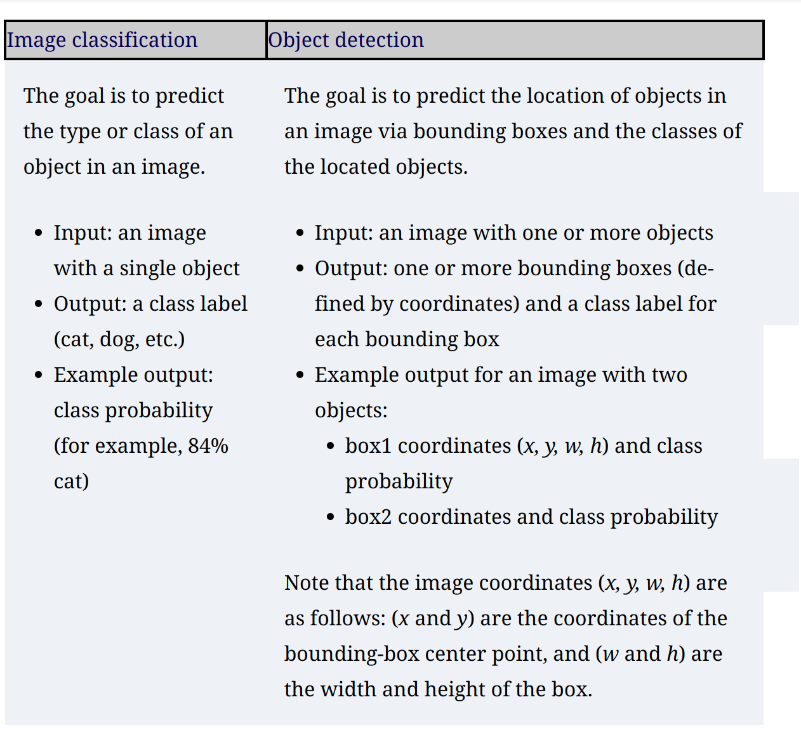
General Framework for Object Detection
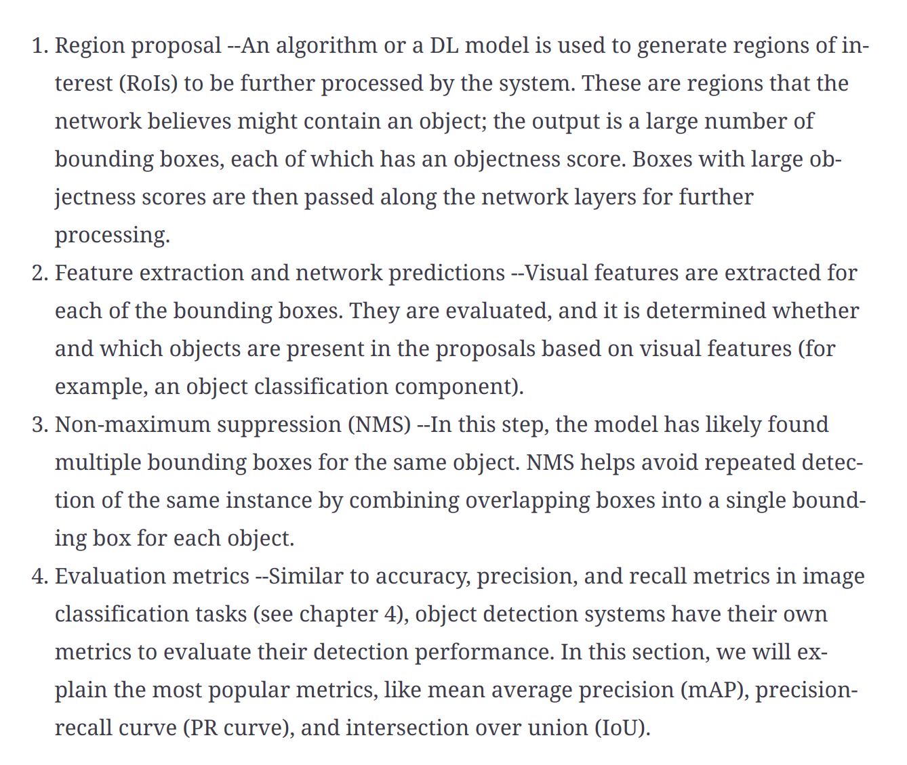
Region Proposal
- The system looks at the image and proposes RoIs for further analysis. RoIs are regions that the system believes have a high likelihood of containing an object, called the objectness score
Feature extraction
- Extract features from ROI to determine the class of the image.
- Two predictions are made for each region
- Bounding box prediction
- Class prediction
Non-Maximum suppression (NMS)
- Multiple detections map happen for the same object. NMS is a technique that makes sure the detection algorithm detects each object only once.
Object Detector Evaluation Metrics
- Frames per second (FPS) to measure detection speed - R-CNN operates at 7 FPS, SSD operates at 59 FPS.
- Mean average precision (mAP) - It is a percentage from 0 to 100, and higher values are better.
Intersection over union (IOU)
- It evaluates the overlap between two bounding boxes - Ground truth bounding box and the predicted bounding box
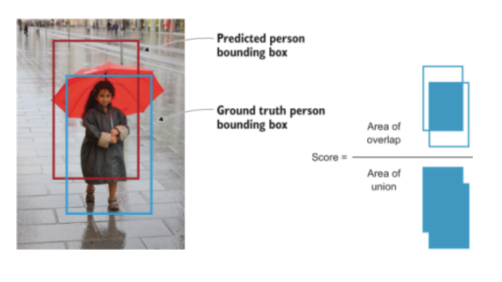
IOU = Area of Intersection / Area of the Union IOU should be greater than a threshold which is tunable according to the problem.
If the IOU value is above this threshod, the prediction is considered a True Positive (TP) and if it is below the threshold, it is considered a False Positive (FP)
Mean Average Precision (mAP)
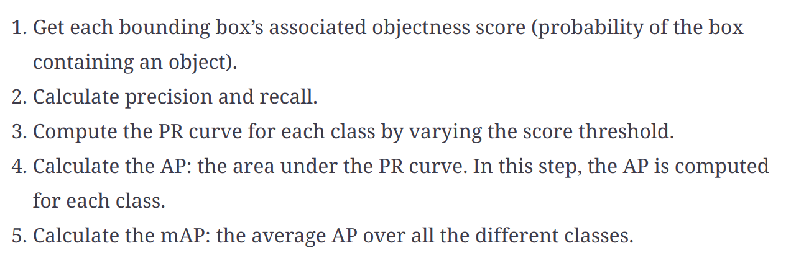
Region-based convolutional neural networks (R-CNNs)
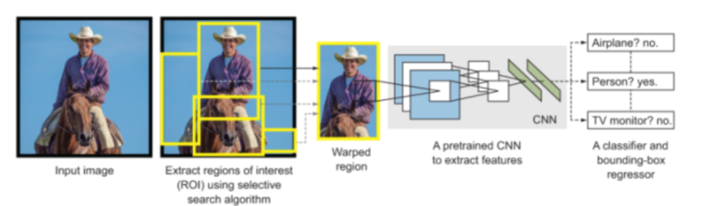
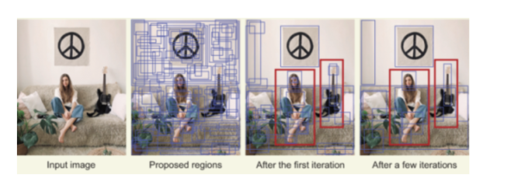
Draw backs of R-CNN
- Very slow
- Three separate modules which does not share computation
Fast R-CNN
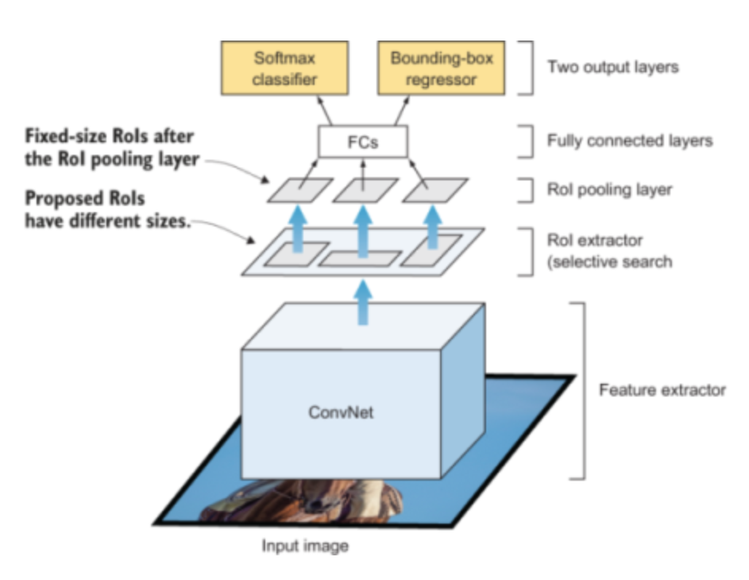
The loss will be multi-task loss - For predicting the class of the objects and the bounding box.
The region proposal is coming from a different model. This slow down the algorithm.
Faster R-CNN
Instead of using a selective search algorithm on the feature map to identify the region proposals, a region proposal network (RPN) is used to predict the region proposals as part of the training process.
The predicted region proposals are then reshaped using an RoI pooling layer and used to classify the image within the proposed region and predict the offset values for the bounding boxes
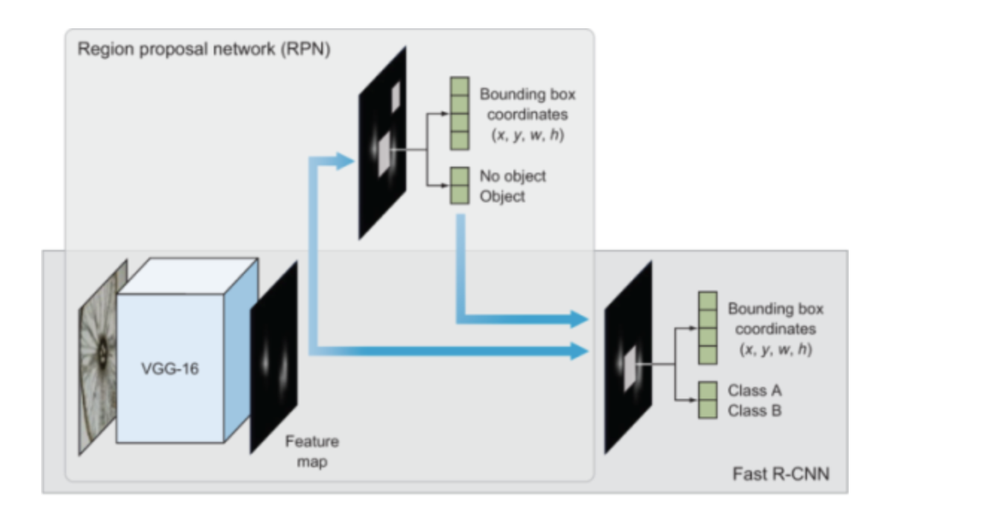
In general, single-stage detectors (SSD, yolo) tend to be less accurate than two-stage detectors (R-CNN) but are significantly faster.
Single Stage Detector (SSD)
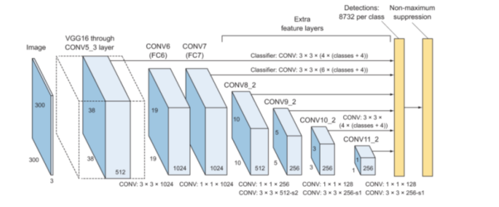
You only look once (YOLO)
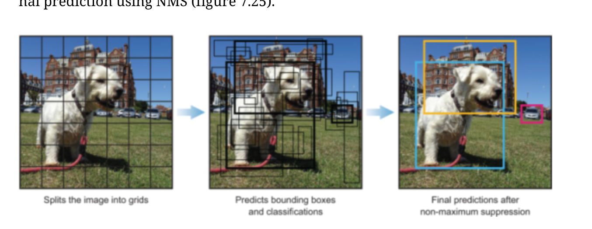
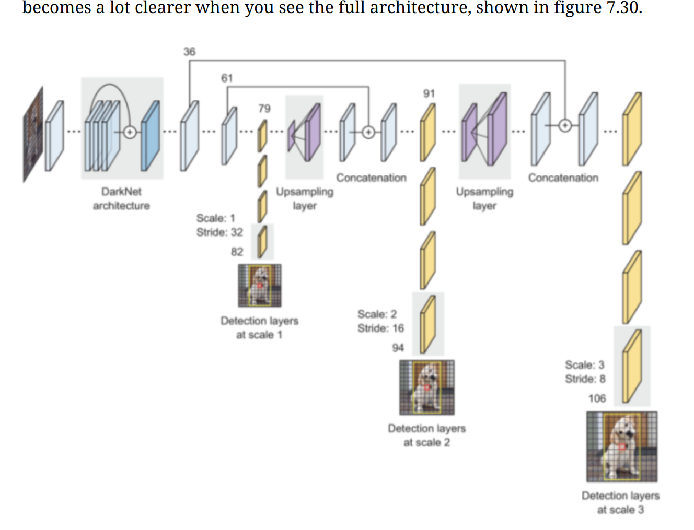
Summary
Image classification is the task of predicting the type or class of an object in an image.
Object detection is the task of predicting the location of objects in an image via bounding boxes and the classes of the located objects.
The general framework of object detection systems consists of four main components: region proposals, feature extraction and predictions, non-maximum suppression, and evaluation metrics.
Object detection algorithms are evaluated using two main metrics: frame per second (FPS) to measure the network’s speed, and mean average precision (mAP) to measure the network’s precision.
The three most popular object detection systems are the R-CNN family of networks, SSD, and the YOLO family of networks.
The R-CNN family of networks has three main variations: R-CNN, Fast R-CNN, and Faster R-CNN. R-CNN and Fast R-CNN use a selective search algorithm to propose RoIs, whereas Faster R-CNN is an end-to-end DL system that uses a region proposal network to propose RoIs.
The YOLO family of networks include YOLOv1, YOLOv2 (or YOLO9000), and YOLOv3.
R-CNN is a multi-stage detector: it separates the process to predict the objectness score of the bounding box and the object class into two different stages.
SSD and YOLO are single-stage detectors: the image is passed once through the network to predict the objectness score and the object class.
In general, single-stage detectors tend to be less accurate than two-stage detectors but are significantly faster.